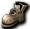

提供情報或編輯請求，請到情報提供公佈欄、編輯公佈欄。
Lv1～20
[推薦單人或組隊(PT)練功地點]小烏鵝任務/米魯里斯森林3/盧亞斯森林2/米魯里斯森林4/艾德安德原野
＜小烏鵝的新手任務＞
聖職者的話，在通往城鎮外的橋中央有給予小烏鵝任務的NPC。
用攻擊狩獵怪物的時候
比起初期裝備的杖，雜貨店等販售的木刀等攻擊力比較高，所以裝備那個吧。
如果在練功地點看到人，就積極搭話請對方組隊一起練功比較好。
＜米魯里斯森林3/盧亞斯森林2＞
米魯里斯森林3和盧亞斯森林2的小烏鵝是非主動型(不會攻擊)。
動作有特色，有點難打倒，但打倒會得到名聲值。(名聲經驗值是穿後述羽毛帽所需)
另外小烏鵝會掉落聖職者或魔術師用的移動回城媒介。
目前這些媒介用不到，所以賣給商店(即使名聲Lv1，每個媒介最低也能以3,050Glod～賣出)
當作藥錢或初期裝備的費用吧。
- 米魯里斯森林3…
地圖很大,所以尋找小烏鵝的效率不佳,但除了小烏鵝之外還有不死系的[死靈凱斯塔]。
怪物名稱被[ ]圍起來的稱為不死系怪物，聖職者的回復魔法會成為攻擊判定。
[死靈凱斯塔]被直接攻擊時,在這個等級帶非常痛,但是
但不相鄰、邊逃邊用大回復術的話就能打倒，
所以學會大回復術等回復魔法後，帶很多MP回復藥挑戰一次看看比較好。
打倒[死靈凱斯塔]的話經驗值1萬。(2011/1/12現在小治癒無法攻擊不死系) - 盧亞斯森林2…
地圖狹窄，只有小烏鵝所以找的效率好。
常常有人在。
※小烏鵝的特色動作是…
一旦被攻擊，只要攻擊者不離開畫面，就會跟在後面，並以攻擊者為中心做十字移動。
利用那個動作，一次打不死的話，移動到靠近牆邊前1格的地方比較好。
小烏鵝跟到牆邊的話，會卡在攻擊者與牆壁正好1格之間而不動，在那裡解決牠。
※Lv11就能戴上聖職者的職業帽羽毛帽，
但戴羽毛帽需要名聲等級10。
現階段提升名聲經驗值，只有在前述的米魯里斯森林3或盧亞斯森林2等打倒小烏鵝，
要不就是去魯克西翁鎮的海灘夾板新手課程,二選一。
＜米魯里斯森林4＞
米魯里斯森林4的摩斯騎士偶爾會掉落文字是橘色的淚之戒(＝可附魔的淚之戒)。
與摩斯騎士戰鬥時，因為摩斯系(包含摩斯、摩斯戰士等)的防禦屬性是風，
Glod有餘裕的話購買火之護符並裝備會稍微輕鬆。
城鎮裡的神官販售附魔用的捲軸。
錢有餘裕後，使用強化之卷，每個戒指附魔4次吧。
讓每個戒指付與AC4來降低AC比較好。
全WIS培養的話，備齊這些後WIS會達到Lv+10，MP回復量加成升到最大。
另外，摩斯等掉落的摩斯皮、惡夜摩斯等掉落的金粉
是之後要做的黃金靴任務所需，所以先存起來比較好。
摩斯皮→丁涼鞋的任務
迪恩涼鞋→黃金靴的任務
＜艾德安德原野＞
位於從盧亞斯城鎮11點方向的傳送門出去的地方。
不死系的[迪斯][迪斯特][達伊特]很多，躲進幾處三面是牆的地方
用大回復術逐一打倒。沒有[ ]的對手用神聖打擊打倒。
掉落多所以是前期的賺錢手段。特別是[迪斯特]本身就有約1000經驗值，
死亡時還會召喚約4隻[迪斯]，所以經驗值也相當划算。
-推薦裝備
春雨耳環或玉石耳環、屬性腰帶、適當的鞋子、比杖更強的武器(木刀等)
-推薦裝備新手版
春雨耳環或玉石耳環、商店販售的適當鞋子，單人提升的話是商店販售的鈍器等。
-初期的籌資
賣掉打倒怪物得到的錢或掉在地上的道具存錢，
依序從防具店購買木刀或錘子等武器和衣服，從雜貨店購買耳環等比較好。
另外，神官販售的法術等，Glod一存夠就逐一學起來比較好。
想使用禱告的話，在Lv40或50左右之前學起來吧。
○Lv10：禱告(攻擊技能：攻擊力倍率從4％：16％：36％：64％：100％隨機。) ※依賴STR。
Lv21～24
[推薦單人狩獵場]米魯里斯森林7([惡夜摩斯])/米魯里斯森林3([死靈凱斯塔])/斯歐米森林4
[推薦PT練功地點]斯歐米森林4/盧亞斯森林4
＜米魯里斯森林7＞
買足藥品，從盧亞斯城鎮往左上出去，沿路走到米魯里斯森林7有[惡夜摩斯]，
一邊用治療術等回復魔法猛灌藥一邊獵殺。
從深褐色寶箱掉出機械腰帶或羅達腰帶就裝備。出2個以上就放進倉庫。
這2種腰帶非常昂貴，所以等完全清楚透過交易等處理方式後再處理。
＜斯歐米森林4＞
有會掉落庫納或艾因格等可附魔的空氣戒指的敵人,所以
所以是很多人為此而來獵殺的練功地點。
單人去時，為了被沒有[]的庫納或阿英包圍的情況，
帶幾個天翼之風比較好。
聖職者打倒不死系的[庫納]或[阿英]比較好。
[絨毛鼠]的經驗值也很划算。
＜盧亞斯森林4＞
組PT的話，去前述的斯歐米森林4或盧亞斯森林4比較好。
敵人的掉落和經驗值還算划算，敵人偏柔軟，應該能比較安全且有效率地獵殺。
※不建議單人去盧亞斯森林4。有被敵人一窩蜂聚集而被圍毆的可能
-推薦裝備
 獸人的護膝、
獸人的護膝、 獸人手套、(PT時)盾牌等。
獸人手套、(PT時)盾牌等。
-推薦裝備新手版
商店販售的WIS2戒指或INT2戒指等。
差不多大部分的欄位都能填滿了。勳章不單人的話不需要。
另外Lv21就能製藥了。
製藥技能「藥學」由米魯里斯鎮的煉金術士販售。
可以節省藥錢，只有這個能做的摩斯果汁和瑪娜莉克G40很方便。
瑪娜莉克G40雖然和蘋果有同樣的回復能力，WEIGHT卻是蘋果的一半，
所以能攜帶蘋果的2倍。
○Lv21：鍊製藥劑[製造](製藥技能：商店可購買)
◎Lv25：神聖護體(單體持續：AC-40：商店可購買)
Lv25～39
[推薦單人練功地點]斯歐米森林4
[推薦PT練功地點]依卡魯斯周邊野外/斯歐米森林4
在街上或交流廣場，或對在各森林單人練功的前衛搭話，一起去練功比較好。
應徵「F2佈告欄」的聖職者招募，或自己招募前衛也不錯。
特別是這個時期，單人提升等級相當辛苦
(前述的[惡夜摩斯]，從Lv32起經驗值也開始縮水…。)
學會「強力治療術」並換上「31服」後，積極應徵F2等的招募，
或自己招募組隊，玩PT是通往升級的捷徑。
邊組隊邊學會聖職者的走位。
請前衛給予關於自己走位的建議，
從這時候起記住基本走位，並自己改進比較好。
打算單人通過的話，要不斷粉碎能用打擊撲殺的敵人，
或用治療術、強力治療術打倒各森林的不死系怪物。
能打倒的敵人頂多是盧亞斯森林4的諾肯，應該是非常艱辛的路。
如果是為了製作鍊製藥劑專門聖職者而想升級，最近的路是米魯里斯森林3的
會變成狩獵[死靈凱斯塔]吧。
如同前一個等級帶所寫，
用治療術驅散經驗值多的不死系敵人也是一種做法。
這種情況推薦斯歐米森林4。
也是Lv10～50左右的前衛會來的練功地點，所以互相搭話一起去練功也不錯。
不論哪種，單人提升的話，和其他職業比起來會是非常辛苦的升級。
斯歐米森林7的絨毛鼠全是不死系，
雖然找起來要花點時間，但經驗值算是很划算。
主動型只有惡夜摩斯，所以不太需要留意自己周圍也令人開心。
-推薦裝備
合金耳環或炫光耳環(Lv31可裝備※都是商店販售品)
-推薦裝備新手版
○Lv35：救援術(單體持續：MaxHP+30％) ※可用高級救援術覆蓋。
Lv40～49
[推薦PT練功地點]依卡魯斯周邊野外/魔窟16樓以後等
依卡魯斯周邊地圖很多，可以看前衛的人數或隊伍的等級帶，
決定要去哪裡。
代表性的是卵巢野外4或食蟲植物野外2等。
敵人偏柔軟且經驗值偏多，推薦魔窟16樓以後。
利用魔窟內的電梯比較快。
-推薦裝備
獸人的護膝、獸人手套、可附魔的風盾
-推薦裝備新手版
差不多該把獸人的護膝和獸人手套備齊了。資金籌措雖然困難。
Lv40可習得的生命力恢復術、技能力恢復術有的話，組隊時會很有幫助。
可以在擺攤等購買，或去打會掉落的敵人入手。
神聖護體和救援術也先學起來吧。
差不多是聖職者在PT中有需求的時期，
招募PT去某處，或加入某處的招募成為標準。
要在商店購買MP回復劑再出去練功。
到達Lv50後，一定要學會神官販售的痊癒術。
○Lv40：渴望之紋(單體持續：DAM+25：掉落) ※有可能破壞騎士・吟遊詩人DAM修正相關的輔助。
◎Lv40：生命力恢復術(單體持續：每秒回復HP40) ※3秒的回復量相當於強力治療術1發。
◎Lv40：技能力恢復術(單體持續：每秒回復SP16) ※取得時，唯一的SP回復魔法。
○Lv40：再生術(單體：復活：商店) ※與道具復活藥水相同的效果。
◎Lv45：魔法之衣(單體持續：MaxMP+30％：掉落) ※隨最大值連MP的自然回復量也會提升。
Lv50(赫爾)～59
[推薦PT練功地點]依卡魯斯周邊野外/魔窟/不可思議地下城
＜依卡魯斯周邊野外＞如前述。
配合前衛的殲滅力或隊伍的等級帶換地圖看看吧。
PT成員有60以上的聖職者，或有殲滅力的前衛湊齊的話，
也可能去更後面的火山野外1等。
＜魔窟＞
魔窟27～魔窟29樓(最深處)應該是賺經驗值最有效率的。
以少人數PT去比較好吧。
但是29樓有火焰飛龍(通稱黑t)在徘徊，千萬注意。
發現後立刻逃。牠會相當糾纏地追過來，所以早點移動。
反過來被火焰飛龍發現的話，因遠距離變成墓碑的機率大，
赫爾期間不去比較好的情況也有。
把赫爾莉克夏整理到馬上能按到的位置的快捷鍵。
＜不可思議地下城＞
如果習慣了雙人或三人組隊,就可以在艾莉絲區域1～5一起狩獵
提升名聲或收集戒指。
因為會掉落可附魔的戒指，非常適合賺資金，
所以找能帶你去的人比較好。
學會痊癒術後能回復SP，
所以應該會比之前的等級更容易請前衛組隊。
積極地參加PT吧。
＜海馬單人練功＞
海馬通常指在魯克西翁地下城5等的海馬騎士、海馬法師。
魯克西翁地下城5有許多不死系的[海馬騎士]、 [海馬法師]，
[海馬法師]，
所以裝備齊全的人也可以單人打倒。
但是，初學者50幾級時AC還很高、WIS不足等，
加上不死系怪物HP很多，
在打倒完之前非不死系的雜魚會靠過來等，效率不太好，所以不要勉強。
這個等級帶經驗值相當划算，但不習慣的話很容易死，所以一定要帶天翼之風、
 赫爾莉克夏、少量恢復速度藥水和回城的傳送門，並盡量選擇能1對1戰鬥的地方
赫爾莉克夏、少量恢復速度藥水和回城的傳送門，並盡量選擇能1對1戰鬥的地方
來獵殺比較好。
如果以PT等去有海馬的區域，
為保險起見帶恢復速度藥水(防海馬系施放的混亂魔法)
去比較好。
另外，用痊癒術海馬單人的話，因殲滅力慢而有傾向囤積敵人，所以請注意。
(在一處囤積敵人的話其他地方會不重生，必然可能被其他人討厭。)
邊適度釋放敵人邊獵殺等，下點工夫看看。
這一帶不太給人添麻煩就能單人的練功地點很缺乏。
海馬系的特徵…不與海馬相鄰、空出1格，海馬就只會使用遠距離攻擊。
自己的WIS高的話，遠距離攻擊或異常狀態也不太會吃到，
所以空出1格用痊癒術等攻擊，我方幾乎毫髮無傷就能打倒海馬。
另外，把海馬畫在畫面邊緣剛好被切到的位置，牠就會靠過來，
利用這個特性可以引怪。
Lv60可以學會超級恢復(S恢復),但是
但是2006/11/15的更新後，範圍回復對不死系的效果倍率不再疊加，
所以強力痊癒術視用法而定，已變成更危險的魔法，需要注意。
＜[長老迪斯]單人＞
2nd角色以後等，持有回憶之書(單人)的話，能快速飛到妖獸窟14F。
在這張地圖用端打（遠距離邊緣攻擊）打倒[長老迪斯]，就能有效率且不受傷地打倒。
不使用隨機傳送牧師,而是一邊挑選[死靈凱斯塔]一邊裝備盾牌移動狩獵,
是長期待下去的訣竅。
想鍛鍊禱告的WIS聖職者，學會痊癒術後從這一帶開始就能不斷使用禱告，
變得能夠使用之後,對自己施放全輔助,同時對魔界村地下城1F的巴基等使用。
-推薦裝備
神授耳環×2(Lv51起可裝備※入手難度低)
不過，E可的春雨耳環若附有AC4和HP30以上，則推薦那個。
◎Lv50：痊癒術(單體：大幅回復HP和SP：商店) ※相當於強力治療術3發的HP回復，以及近100SP的回復量。
◎Lv51:精神意象Lv2(在斯歐米的雜貨店被吸走50%氣力的事件中取得)
○Lv55：技能之衣(單體持續：MaxSP+30％)
Lv60～69
[推薦PT練功地點]火山野外1/萊貝雅周邊地圖(※安塔貢製作任務結束後)/冰之城/艾娜花園1F迴廊～
[推薦單人練功地點]米魯里斯森林6/魯克西翁地下城5樓/妖獸窟14樓・15樓
[PT練功地點]
＜火山野外1＞
要穿重視AC・HP的裝備去。
前衛鍛鍊過的話，雙人～的少人數也能相當程度地獵殺。
前衛偏多的情況下，剛學會範圍回復法術的60幾級聖職者1人MP會吃緊，
可能需要詩人或另一名聖職者，
不過最近的傾向是，回復劑強化及擁有課金支援守護的前衛很多，聖職者1人出發的情況也時有所見。因為聖職者的需求常常超過供給，與其讓等待應徵的PT成員空等，
也有聖職者1、無吟遊詩人就出發的情況，這樣的話MP轉眼就會耗盡，
所以要併用痊癒術和強力痊癒術，並帶80～100個左右的瑪娜莉克夏去。
對魔術師雖然魔法之衣也不錯，但比起那個，為了不讓他們死亡，神聖護體和救援術不要
斷掉。除了前衛魔術師之外，防禦、HP都有偏低的傾向，斷掉的話可能被老虎一擊死
(對前衛魔術師，附魔武器會猛吃SP，所以也需要技能力恢復術)。
※這個等級帶蘋果的性價比還很差。蘋果WEIGHT是2，
瑪娜莉克夏WEIGHT是1，所以最大MP沒超過2500的話使用2個瑪娜莉克夏
效率比較好 瑪娜莉克G40的話是最大MP超過1250之後
每weight2的MP回復量比較
| 道具名稱 | MaxMP500 | MaxMP1000 | MaxMP2000 | MaxMP3000 | 備註 |
 蘋果 蘋果 | 200 | 400 | 800 | 1200 | 每個MP40%,weight2 |
| 酸蘋果 | 250 | 500 | 1000 | 1500 | 每個MP50%,weight2 |
 瑪娜莉克夏 瑪娜莉克夏 | 1000 | 1000 | 1000 | 1000 | 每個500,weight1 |
| 瑪娜莉克G40 | 400 | 800 | 1600 | 2400 | 每個MP40%,weight1 |
經驗值・名聲經驗值都無可挑剔，但基本上對聖職者而言火山是虧錢的地圖，
所以各自去海馬單人賺錢，或PT時偶爾去金錢上也划算的練功地點補貼虧損比較好。
金錢方面也很划算的PT狩獵場,可以舉格利佛或胡桃鉗等不可思議地下城。
＜萊貝雅周邊地圖＞
對這個時期的Lv帶來說，經驗值算划算的。
不過前往這張地圖所需要的是名為安塔貢的道具。
可以透過任務製作，但檀香樹枝很稀有，所以完成1件需要耐心。檀香樹枝有時會在擺攤販售，利用那個也不錯。
後衛聖職者單人要完成非常困難(為了入手諾肯藥劑袋和檀香樹枝，要應付伐木諾肯和
隨之而來的大量諾肯軍團，而且諾肯藥劑袋連擺攤都不賣)。
使用其他角色,或是招募協力者來取得,偶爾冬季對抗本身也會在露天攤販販售
會在擺攤販售，買那個。
萊貝雅周邊居住著許多不死系怪物。
用聖職者的範圍回復魔法強力痊癒術能拿到目標，所以要注意處理方式。
穿重視AC・HP的裝備即可。
＜冰之城＞
前往冰之城有…
穿過上述萊貝雅周邊地圖的路線(必須安塔貢)
在露天攤販等購買阿德利文之門或連結,從艾娜花園往下走的路線(不需要對抗/需要之門)
兩種。
與萊貝雅周邊地圖一樣居住著不死系怪物，
經驗值幾乎是萊貝雅周邊怪物的2倍。
攻擊力強且目標不易脫離，所以應該要穿重視AC・HP的裝備。
S恢復的使用方式也必須十分注意。
以1樓入口附近門開著的房間為基點，
用那裡的怪物掉落的鑰匙前往下一個房間的機制。
沒有學會Lv70可學的高級救援術的聖職者1人的PT能去到的
大概是4樓前。
各房間住著冰霜貴族(冰之城各房間的首領怪物般的存在)，
偶爾會掉落高價道具。
從4樓起有相當數量使用遠距離攻擊的怪物，請注意。
[單人練功地點]
＜米魯里斯森林6＞
用牧師之門選擇迪格堡壘,不進洞窟直接到外面的話,就是米魯里斯森林6,非常方便。
不死系怪物偏多，所以連打強力痊癒術殲滅敵人。
特別是紅色的哥布林[佩利哥布林]會掉落聖職者的法術強力痊癒術，
把那些法術等賣給商店存點小錢。
＜魯克西翁地下城5＞
入手回憶之書(單人)的話，在海盜要塞入口記錄的話往返輕鬆。
因為學會了強力痊癒術，獵殺不死系海馬應該變輕鬆了。
帶大量瑪娜莉克夏去挑戰吧。
周圍散布著海馬時，先引導幾隻左右聚在一起，再一網打盡比較好。
即使如此，一對一戰鬥時，恢復術消耗的MP較少、造成的傷害較大，
建議好好搭配使用。
被非不死系的敵人包圍、覺得應付不來時，立刻用天翼術(吟)或天翼之風
逃跑。
另外，強力痊癒術和攻擊魔法不同，即使其他聖職者正在掉寶狩獵，
也能對同一隻敵人施放，所以請小心不要不小心搶了別人的怪。
這裡有可附魔的3階戒指，以及各種附魔用捲軸、未鑑定道具等大量掉落。
這些東西的處理方式可參考聖職者的資金籌措方法。
＜妖獸窟15＞
15樓…除了[死靈克斯塔]之外還有九吋釘(黑熊風格)
看到九吋釘時，建議使用傳送或天翼之風。
因為腳程非常快，即使跑了一段距離逃走，也會以驚人的速度追上來。
而且受到的傷害相當痛，輔助消失時即死也是常有的事。
-推薦裝備
可附魔的春雨耳環(ELv4時HP50/AC4，附魔HP後會變強。)
可附魔的衣服或附魔OP的衣服、可附魔的魔法風盾、可附魔的鞋子、 黃金靴
黃金靴
Lv60可習得範圍回復魔法強力痊癒術(S痊)、 團體痊癒(G痊)。
團體痊癒(G痊)。
S痊是MP消耗與效果平衡良好的魔法，
但如果把不死系敵人捲入回復範圍內，也等於攻擊了不死怪物，
目標會轉向自己。
這會讓前衛拉住的目標被奪走，
而且自己若也承受不住攻擊，就要斟酌、設法調整使用的場合。
火山原野1・2沒有不死系，用S痊就足夠了。
同樣在Lv60習得、神官處有賣的G痊，以我方為目標，
可以在不傷害敵人的情況下回復我方。請依狀況分開使用。
消耗MP略有不同。(S痊:90MP/G痊:100MP)
60級左右(S痊的HP回復量還只有300～400左右)，
吟遊詩人的玫瑰之旋律(不含自己、以自己為中心5x5範圍：約15秒內每秒回復HP400)較優秀，
所以除了特殊場所之外，組隊的需求即使從回復魔法的角度來看也是吟＞聖，
但若看瞬間回復量，聖應該比較強，所以敵人大量湧來時，
請務必一手拿著蘋果，把我方受到的傷害全部補回來。
◎Lv60：強力痊癒術(我方範圍25：效果約略弱的恢復術程度：取得難度低)
◎Lv60：團體痊癒(選擇範圍25：只對所選目標陣營施加與S痊相同的回復效果。)
※團體痊癒若以敵人為對象施放，會施放到敵方陣營。以敵人為目標使用時，
對我方的回復魔法效果不會發動，請注意。
○Lv60：優雅靈氣(對自己施加優雅效果：取得難度高) ※單人使用的性能。適合想用祈禱之光的人。
Lv70～Lv90
[推薦組隊狩獵場]火山原野1/火山原野2/冰之城/裴莉亞房間～各房間/冰之城/艾娜花園6F迴廊以後、怪物城堡1～4
[推薦單人狩獵場]魯克西翁地下城5/冰之城/艾娜花園10F迴廊
這個等級帶盡量不要死亡。
死太多次，可能會無法滿足學習魔法所需的名聲Lv50條件。
[PT練功地點]
＜火山原野1＞如前所述，
Lv70習得高級救援術後，只有1名聖職者也應該能穩定狩獵。
但剛學會B救時，MP消耗仍然吃緊，這是現實。
＜火山原野2＞
請穿AC・HP裝備前往。
火山2的老虎攻擊力很高，要注意。
因為容易前往，招募應該很多，但和火山1一樣容易虧本，所以適度參加即可。
＜冰之城/裴莉亞房間～各房間＞
以裴莉亞為首的冰之城4F有很多使用遠距離攻擊的怪物。
因此除了HP・AC之外，也要留意MC裝備。
4F的各房間會出現很多冰霜貴族，抱著經驗值加一半掉寶期待的心態去玩也很有趣。
湧出時會湧出非常多，請視情況使用S痊。
或者視自己的耐久力與前衛商量，決定是否使用及使用頻率。
Lv85地獄難度時有一個任務會不用傳送門直接傳送到冰之城1F，
可以加以利用。別忘了裴莉亞鑰匙。
＜冰之城/艾娜花園6F迴廊以後＞
別忘了帶3個月之晶，以及在雷維亞可挖到的雪人冰鑽數個。
與4F相比可獲得將近兩倍的經驗值，
但掉落幾乎只有製作艾娜花園[全體]用的材料霍布里克，有點寂寞。
或許看開當作只為了經驗值比較重要。聽說極為偶爾會掉超稀有道具騎士帽……。
AC・HP重視的裝備即可。
10F迴廊後面的單人狩獵場會再提到，因為所有敵人都是不死系，說是聖職者的聖域也不為過。
另外也有聖2以上加魔等組成的隊伍，在各樓層的露台狩獵。有魔法護盾[全體]的話，
[幽靈弗里克爾]的遠距離攻擊會好一點，不過至少要對自己施放魔法護盾，其餘用S痊等
這樣的模式。可以期待各種裝備類掉落。這樣玩的時候請穿MC裝備。
＜怪物城堡1～4＞
怪物城堡，俗稱MC。大約85以上就能加入隊伍。
MC1…前衛單人、前衛雙人～四人、前衛與後衛的雙人～四人等，聖0～1的少人數隊伍較多的狩獵場。
這裡狀態異常很多，所以解除魔法的使用頻率很高。
因為有美杜莎，所以需要解石化。
聖職者參加時幾乎都是聖1，是考驗實力、難度偏高的狩獵場。
有戒指用的捲軸和冰霜貴族產出的稀有道具等各種東西，是掉落很有樂趣的狩獵場。
MC2…魔單人、前衛單人、前衛後衛的中～大型(聖2～5左右)隊伍較多的狩獵場。
比起移動狩獵，更多是排好陣形用拉怪方式狩獵的狩獵場。
若不把招募時間算進去，經驗值偏多。
聖職者之間需要分擔輔助、互相幫助。
MC3…聖單人、前衛後衛的中～大型(聖2～3左右)隊伍較多的狩獵場。
移動狩獵與拉怪狩獵兩種都有。除了經驗值之外，名聲經驗值偏多。
黑蛙很常掉微風之戒。另外智者會掉戰耳・魔耳等。
聖職者之間分擔輔助、互相幫助這點和2相同，但也要注意敵人大多是不死系。
是否使用S痊等，請依自己的裝備等判斷，並事先詢問隊員。
在噴水池前排陣形時，前衛容易散到己方陣形左右，使用超級痊癒術
會吸引不死系的目標，所以請慎重使用。若不打算使用，請拜託大家靠攏。
前往遠離己方陣形的地方復活時，要注意t和絕望之語(Desperado Word)的遠距離攻擊。
MC4…前衛後衛的中～大型(聖2～3左右)隊伍較多的狩獵場。
需要長靴。掉落幾乎沒有，所以大致上是以經驗值為目的。
從MC1～3的首領怪物處得到的證明，各收集1枚組成的證明套組，就是一次性的通行證。
因此一旦進去通常會狩獵很長時間，不太適合短時間參加。
不過一旦進去通常不太會解散，所以經驗值會成長得非常驚人。
地圖比其他MC窄，所以比起移動狩獵，更多是排好陣形用拉怪方式狩獵的狩獵場。
一般的做法是用守護、聖、吟、(若有的話)後衛預言者圍住防禦薄弱的魔。
怪物攻擊力很高，若因某些原因陣形崩潰、重整太慢，也可能全滅。
被要求到離陣形很遠的地方復活時，離開陣形後要迅速完成復活・回復等再回來。
陣形有缺口的話，攻擊會從那裡打向魔，魔死亡後就沒有能削弱敵人的角色，進而
導致全滅的模式也很常見。魔的正面或斜前方有時沒有填滿，這一點也
不堵起來的話，魔就無法吸引圍在自己周圍的角色和守護的目標，聖職者自己就會
受到攻擊，所以請牢牢堵好。
[單人練功地點]
＜魯克西翁地下城5＞
如前所述，這是容易前往又能賺錢、相對安全的狩獵場。
＜冰之城/艾娜花園10F迴廊＞
每次需要3個月之晶。若想製作艾娜花園[全體]等，每次還
需要1個雪人冰鑽。月之晶可在艾娜花園1F～4F取得，但一旦從艾娜花園
往下走，要回來相當費力。建議先挖好月之晶存起來。
透過在露天攤販購買等方式取得艾娜花園，然後衝刺跑到10F。
10F只有不死系怪物，所以和單人掉寶狩獵一樣的做法，用S痊、超級痊癒術等殲滅。
但和單人掉寶狩獵不同，要注意[Anacam]的遠距離攻擊。
狩獵後只要進行把掉落的霍布里克換成傳送門的任務，
之後就可以自給自足。就單人時的經驗效率而言算是穩定的。
被大量敵人包圍時，要注意[伊克勒斯]的連帶波及。數量多到難以處理時，
請把[伊克勒斯]引到沒有它的地方，或改變回復魔法的中心，避免波及到。
10F偶爾會掉落格納納達或火牆術等技能・魔法。
-推薦裝備
首領盾(※資金困難時，建議從單怪盾→拉怪盾逐步整備裝備。)
若能取得附有HP、INT、WIS的可附魔衣服、附魔OP衣服就很好。
Lv70習得增加最大HP的高級救援術，以及廣範圍回復魔法超級痊癒術。
另外對WIS聖職者而言是強力HP回復魔法的活力聖光，在Lv73習得。
雖然有點特殊，但用得好是強力的魔法。無法使用S痊時等很派得上用場。
因為消耗MP高達225，連發時即使有MP2000左右，連續施放4～5回合MP就會耗盡。
請記住啃蘋果的時機。
如果能用得熟練，大約3～4人的少人數隊伍也能在冰之城等地方玩了。
Lv90可習得天啟。如果有打算使用，請先把SLv提高。
特別是打算選擇善屬性的人，3次D之後它會取代DPH成為範圍火力，
建議多加鍛鍊。
單人狩獵場在Lv60～90的等級帶，上限大概是海馬。
Lv90時有需求的魔法。
高級救援術、神聖護體、 魔力之水(Mana Aid)、生命力恢復術等輔助魔法，
魔力之水(Mana Aid)、生命力恢復術等輔助魔法，
以及以恢復術為首的回復魔法。(其他輔助魔法大多是其他職業的下位相容魔法)
解焚燒、解石化、解冰凍等解除魔法(取得難度偏低)
不過，組雙人隊伍時，請依對方的職業調整輔助魔法。
(例:與戰士組隊→追加本阿莫里 與騎士組隊→因為有戰術,所以不需要本阿莫里)
詳細請參考技能＆魔法的疊加施放。
題外話，和修道士雙人時，大部分人都說不需要高級救援術，
其實身為修道士下位HP輔助的強身,會和最佳牧師援助重疊。
這樣一來，氣功發勁是1.7倍的輔助，
強身+B牧師的情況會變成1.2×1.5＝1.8倍。
視使用方式而定，聖職者的輔助魔法每一種都有利用價值。
◎Lv70：超級痊癒術(我方範圍49：強力恢復術程度的效果) ※和S痊不同，快速藥水無效。
◎Lv70：高級救援術(我方持續：MaxHP+50％：取得難度略高)
◎Lv70：優雅(我方持續：消耗SP-30％：商店)
○Lv70：各種狀態異常回復魔法(Lv70時不太會用到：部分為商店販售) ※請事先練習使用。
◎Lv70：解石化：(解除石化狀態)
◎Lv70：解冰凍：(解除凍結狀態)
◎Lv71：解焚燒(解除燃燒狀態)
◎Lv73：活力聖光(3x3的強力回復魔法。可以用快速藥水連打。而且回復量HP/SP似乎都依等級而定。)
※和恢復術一樣，對象滿血時會發動失敗。
另外，若以敵人為對象施放，範圍內角色受到的回復量不知為何會減半(？)，請注意。
詳細規格請參照這裡
○Lv75：名聲復活術(恢復名聲經驗值的復活魔法：取得難度高)
○Lv81：避邪結界(自己持續：以裝備法杖為條件。阻止敵人接近自己周圍。可以讓相鄰的人停住腳步。) 用在我方復活時或復活後可能不錯。
◎Lv86：庇祐術(自己持續：WIS+10/INT+10：取得難度高) ※可與吟遊詩人的提升系疊加。
能提升回復魔法的威力以及部分輔助魔法的持續時間。也非常適合用在掉寶狩獵。
○Lv90:狀態守護(我方持續:對詛咒有抗性:取得難度中) ※和標示不同,似乎會被最後之刃打到。
◎Lv90：天啟(對指定我方周圍3×3造成依SLv及對手STR等而定的傷害的技能。：MC獎賞)
◎Lv90：究級復活術(恢復50%經驗值的復活魔法)
Lv91～99
到了91級，完成討伐冰之女王任務，
決定善惡之後，就可以昇天(決定善惡後移動到天界)。
狩獵場是以組隊前往天上的各地下城、怪物城堡・火山1或2等。
單人可去的狩獵場應該能自行判斷，所以省略。
在天上地下城無法獲得地面上可得的一般經驗值和名聲值。
※關於在天上復活：死亡懲罰也只會施加在善惡等級和信仰等級上，
所以除了阿札爾西斯或阿札爾西斯以外，用復活術或究級復活術
都一樣。若只限定在天上狩獵，考慮到MP，
在學會天上用的復活魔法之前，用復活術就足夠了。
不在天上D的時候,如果被某人說「就算是科馬也好,請來復活」的話,
若是與死亡角色相反屬性的人，就不會被敵人鎖定……。
關於天上：與地面隊伍不同，有時會缺少部分後衛職業，所以沒有吟・騎的話，
請看成員來調整阿莫里等(一人聖也很常見)。
阿札爾西斯・阿札爾西斯請盡早學會。
善屬性的人在2次時如果有自信，可以把S痊/超級痊癒術砲＆天啟＋活力聖光
穿插在輔助的空檔也不錯（自己被打到有危險時就使用活力聖光）。
３次等,吟遊詩人連發混亂的狩獵場的話,要給吟遊詩人祝福之歌或技能援助
會有幫助。到4次之前，建議把一般等級至少提升到95，習得聖職者祝福與
建議學會不朽。使用解放也不錯,但是
請手下留情到不會死的程度。順帶一提，到2次為止特別需要解除的狀態異常
沒有。１次要注意會使出破壞治癒的對手。
※3次有會施放緩慢術等的對手(烏爾舒萊因等)
另外，在與自己同屬性的地下城中，使用S痊或超級痊癒術會讓不死系的
目標轉向自己，所以建議不要使用（善角色是帕爾塞斯/庫休隆/
露米娜/里希涅，惡角色是斯坎達倫/奧菲爾/蓋赫那/戴莫尼昂)
此外，善角色在蓋赫那BD3 PT和戴莫尼昂結界深處陣形狩獵時，治療砲＆
天啟會取代DPH成為主力的範圍攻擊手段，所以請在確保WIS的同時，
充實INT裝備並提升天啟的技能等級。
※在蓋赫那BD3，天啟SLv55左右，依前衛而定，有時能打出8000～10000左右的傷害，
與前衛不相上下。
・關於天啟的技能等級提升
最好與前衛雙人，用S痊或G痊(視狩獵場而定)回復自己和前衛的同時提升，
但如果單人提升，一開始在盧亞斯森4/米魯里斯森2/夢見之塔1F～2F，練到一定程度
之後在米魯里斯森5/魯克西翁地下城1這類會有大量敵人聚過來的狩獵場
提升，周圍所有敵人都能給予技能等級經驗值，所以容易提升。不過如果在太高級的狩獵場
進行，即使不會死，也可能忙著回復而沒空發動，
所以請注意。
Lv95學會的不朽,是在地面上能學到的最後一個魔法。
◎Lv91：靈魂意象Lv3(接受肯比歐斯任務NPC的委託取得)※可代替速度藥水，非常好用。
◎Lv94：聖職者祝福(長時間增加最大HP 取得難度・難)
◎Lv95:不朽(自身持續:數秒間,自己無敵。不可連發。)
◎Lv99：靈魂意象Lv4(到達Lv99時自動取得。可向神官購買)
Lv100～120
・PT練功地點：
・備 註：
技能與魔法的注意事項
 恩典
恩典
缺點是氣力的上升會變得極為遲緩。
由於使用氣力魔法或天上變身的機會會減少，因此對他人施放時
必須留意這一點。
對前衛職業最好不要施放，或事先確認是否要施放。
洪阿莫里
雖然是DAM+25的出色魔法，但關於技能＆魔法的疊加關係，
必須加以留意。
特別是隊員中有騎士、修道士時要注意。
狩獵場介紹中也有說明，因為會抵銷騎士之略(DAM+15、HIT+30)，
所以有騎士在時還是避免比較穩妥。
另外,關於修道士的力量腰帶(DAM+15),阿莫里在能力上雖然較高,但是
但會與修道士其他魔法的持續時間產生落差，也有人覺得管理麻煩。
請確實判斷必要性後再使用。
關於治療系
快捷鍵要怎麼放視運用而定，但建議在快捷鍵的正面和背面都
放入治療系。
放的位置建議不論小鍵盤或數字鍵，都在5號附近(因為可以一邊輔助一邊回復)。
S痊・G痊・超級痊癒術・活力聖光or恢復術這4種容易應對各種狀況，推薦使用。
也有人只使用範圍回復，但活力聖光和恢復術的回復量比範圍回復多，
所以只有一個人血量特別少時先用這些撐住，同時也對全體施放範圍回復。
※因為比起一直對全體連打範圍到那個人完全回復，這樣的性價比比較好。
以下是會吸引不死系目標和不會吸引的一覽。
會吸引不死系目標的
大回復術、治療術、強力治療術、恢復術、強力痊癒術、超級痊癒術
※Ver.2.740現在 大回復術對不死系無效
不會吸引不死系目標的
回復術、團體痊癒、活力聖光
大回復術～恢復術是單體魔法，可以分別對我方和敵人施放，
但強力痊癒術和超級痊癒術如果不考慮對象就會吸引不死系的目標，
可能會搶到其他隊伍的敵人，或讓敵人朝自己衝來，請十分小心。
WIS聖職者的賺錢方法等。
聖職者要備齊所需的魔法與裝備，需要花相當多的錢。
特別是魔法，有的從1000萬到上億不等。
Lv70習得高級救援術(B救)，對1st的聖職者來說是一道難關。
(1st是聖職者時，在Lv70可能湊不出買B救的資金。以掉落率來說算是相當便宜。※伊亞伺服器)
後衛聖職者的賺錢方法
・把品奇歐掉落的媒介賣給NPC(LV1～) 數十萬Glod等級
・在魯克西翁森1狩獵小魔瓜(建議LV21以上) 視狩獵時間與掉落而定
氣功波或小熊帽賣給NPC也能小賺一筆 也會掉微風之戒
・妖獸窟14F或MC3用治療攻擊(Heal Attack)狩獵微風之戒
・掉寶狩獵(參照下方)
・在艾娜花園10F狩獵稀有道具 視掉落而定
・製作托納爾之證並販售 建議高等級，即使是購買謎之石塊來製作，也能賺到千萬單位
以下提示Lv60習得強力痊癒術之後，一直到後期都能用的賺錢方法。
在魯克西翁地下城5樓用S痊殺[海馬騎士]・[海馬法師]，
把掉出來的捲軸和戒指各種賣掉。不過，處理方式依捲軸而略有不同。
去這裡時的隨身物品如下。
・HP回復劑(推薦赫爾莉克夏。覺得危險時先連打看看吧。)
・MP回復劑(推薦蘋果。若是掉寶狩獵會頻繁使用，所以不酸也可以。)
・恢復速度藥水(WIS變高、不會被混亂後就不需要)
・移動用道具(天翼之風・速度藥水・記憶之書等)
各道具的基本處理方式大致如下。請各自靈活應用處理。
[在露天攤販或遊戲內佈告欄等不太賣得出去的捲軸]
用神官賣的強化之卷等先強化到ELv5以後，
再使用掉寶狩獵取得的下列「古老的○○捲軸」進行附魔並破壞。
使用古老的○○捲軸附魔並破壞的話，可以得到詛咒之卷或祝福之卷做不到的、
依附魔等級而定的1個～多個夏伊寧艾許，
這就成為收入來源。(參照下方)
若為了破壞而持續附魔，偶爾會做出ELv10
而無法破壞，不過。
持有3個以上附魔等級5以上附魔失敗時產生的夏伊寧艾許，
與史歐米銀行稍東邊的NPC科亞交談，就能用它換成「古老的○○捲軸」。
偶爾會得到戒指用類型的捲軸，
特別是古老的Dex強化捲軸(附魔DEX：※與古老的Hit強化捲軸(HIT)完全不同)交易價格很高，
請務必在露天攤販等處交易當作資金來源。
(拿出2個古老的Dex強化到露天攤販賣，應該就足以買到高級救援術。※撰寫時，伊亞伺服器行情)
(拿出1個古老的Dex強化到露天攤販賣，應該就足以買到高級救援術。※撰寫時，羅奧伺服器行情/古Dex:450萬，B救/200萬)
出現古老的知識或智慧捲軸時，用來強化自己的戒指也是選項之一，
但特別是1st玩聖職者會缺錢，
所以在裝備和魔法備齊之前，能賣高價(提升DEX或STR)的戒指用捲軸
還是拿去擺攤吧。
-古老的Hit(附魔HIT)強化捲軸、古老的魔力・氣力捲軸
直接擺攤的話價格低或幾乎賣不出去。
古老的Hit強化捲軸拿來用在什麼都有商店賣的武器(木刀等即可)上，
古老的魔力・氣力捲軸用在斯歐米武器店賣的寶珠等上，
來製作夏伊寧艾許吧。
-古老的破魔、閃避、避邪捲軸
要取得附魔對象的物品很麻煩，所以用商店賣的也可以。
(沒必要特地買附魔對象的物品來破壞。)
不過衣服有時會掉在各森林1～的地圖或諾肯地圖上，所以收集那些也是一個辦法。
因為也很費工夫，這部分請依喜好。
古老的HP、 AC強化捲軸
AC強化捲軸
用來附魔聖職者推薦裝備春雨耳環的HP，或用在衣服附魔的人意外地多。
賺錢初期也有把它變成夏伊寧艾許的用法，
但賣到露天攤販或F2，或留著整備自己的裝備也不錯。
[推薦在露天攤販或遊戲內佈告欄販售的捲軸]
-古老的破邪(附魔DAM)捲軸
主要是前衛的人用在戰士耳環或武器上的捲軸。魔或後衛預言者等也用在戰利品的前衛武器上，
附加價值後高價賣出。
高DAM武器・戰耳需求很高、高價交易，所以捲軸的需求也隨時都有。
擺攤販賣的話資金效率相當好。
主要產出來源是海馬，是高等級的人大量消耗的道具，
而高等級的人不會親自去狩獵取得，所以是容易靠露天攤販取得的商品。
沒有時間的時候，丟進倉庫集中起來，再拿到佈告欄等處拋售是最輕鬆的處理方式。
畢竟是高等級玩家必需的消耗品。
-古老的Dex/力量/知識/智慧/強韌捲軸(戒指附魔用)
如果不打算用在自己的裝備強化，就把STR或DEX為基本加成的捲軸等拿到露天攤販賣當資金吧。
提升INT的知識捲軸也有需求，但智慧・強韌捲軸的需求略低。
夏伊寧艾許產出的、不是古老的各種戒指用捲軸(ELv1～5用)，需求傾向也相同。
若資金有餘裕，想在2nd做前衛的話，留著DEX加成的會派上用場。
當然，想把基本附魔做到實用階段的品質，相應地也得破壞不少就是了……。
……就是這樣，1st的聖職者，[掉寶]狩獵⇒用捲軸換艾許・戒指附魔⇒擺攤販賣……很容易成為
資金周轉的基本循環。
另外，如果能準備大量月之晶和付費道具冰之城1日護照，
帶著在雷維亞可取得的雪人冰鑽和月之晶(至少3個)，在冰之城10F
取得霍布里克，回到艾娜花園，大量製作艾娜花園[全體]・艾娜花園後
賣掉的方法也可行。瞄準冰之女王討伐PT開始招募的時候賣
會比較好。
另外，冰之城10F也會掉落其他職業的技能・魔法・裝備，把這些賣掉
也能賺錢。
WIS聖本來就是組隊用的性能，所以似乎不要在意單人時好不好用。
一邊參加隊伍，有空檔時單人進行資金周轉，感覺不錯。
再者，習慣戰鬥之後，或(因持有記憶之書等…)往返狩獵場變得容易時，
如同到處寫的那樣，妖獸窟14F等也可以用來賺錢。
無論如何，WIS聖在習慣戰鬥之前很常死，所以面對海馬時請設法拿盾，
或脫掉光服換成普通衣服或附魔衣服(＝重視AC)等。
WIS聖職者的裝備等。
頭盔：羽毛帽系(WIS+5/INT+5/MP+50) or 百鬼(HP+200/MP+100/SP+100/All+2，一週後消失)
衣服：依Lv選擇(視狩獵場分別使用光服和普通服較好)
護脛：商店販售品 ⇒ 獸人的護膝(對近戰攻擊) or 德魯依護膝(對遠距離攻擊) ⇒ 首領護脛
鞋子：商店販售品 ⇒ 黃金靴(金靴) or 鞋(總是移動速度+10％) ⇒蛇鱗鞋or自由騎手or新手鞋or皮耶特羅鞋
武器：法杖(使用技能時) or 槌(裝備盾時) 次選：附魔HP30的E木刀(古代強化4次後詛咒。特點是輕。看資金可做到HP50左右)
盾：首領盾(拉怪附魔AC-35左右的AC-43是妥協範圍的一般取得。比起附魔36的其他性能價格較貴。)
耳環：春雨耳環 ⇒ 神授耳環 ⇒ E春雨耳環(附魔AC4與HP50以上)
戒指：商店販售品 ⇒ 各種E戒指(推薦增加WIS或INT的物品)
手套：商店販售品 ⇒ 獸人手套 ⇒ 首領手套(1st要一般取得貴到很困難)
WIS聖在分配屬性點的階段，基本MP傾向偏高，
所以裝備上不太在意補足MP。
基本上裝備主要補足WIS=Lv+10、HP、AC、INT、SAR。
整備的優先順序左邊較高。AC太低很危險，所以與HP同時重視。
關於回復魔法的回復量，提高WIS數值會增加SP回復量，提高INT會增加HP回復量。
為了確保MP最大自然回復量的好處，
請用屬性點分配＋裝備品，讓自己的WIS數值達到＝自己的等級+10以上。
另外，自己的MP最大值的增加是靠提高屬性WIS數值，
所以持續把屬性點數分配給WIS直到MP量滿意為止很重要。
戒指等裝備品的加成，要提高INT數值增加HP回復量，
還是再提高WIS數值增加遠距離迴避能力，隨您喜好。
為了成為最強的聖職者～Lv91以後的裝備
大致上，後衛(WIS)聖職者收集好裝備時該著眼的重點，
如上所述是AC和MC、HP，其次是WIS和INT等屬性。
為了依練功地點區分使用，持續入手更好的裝備、附魔付與更好的裝備吧。
依屬性點分配・戰鬥風格・玩家方針會有相當大的變化。
是要用法杖猛打天啟攻擊，還是提高INT來增加治療攻擊或HP回復量，
還是以不死為最優先，或是折衷型。請考慮主要狩獵場，以及在那裡
自己的死亡率等來選擇。法杖型的話目標是含神聖護體-40以上，鎚型的話含神聖護體-100
為目標。即使重視屬性，也希望透過耳環等確保一定程度的AC和HP
（魔力石耳環2個，即使是法杖型・沒有首領手套，含神聖護體也能達到AC-60多；有迪斯手套一雙
的話可達到AC-80多左右）。
範例裝備(Lv95)：火龍冠、火龍服、遠古碎晶杖(雙手)、魔力石耳環2個，
 七重褲、AC-5戒指4連、雷皮靴、伊卡洛斯尼爾里比、混亂手一對
七重褲、AC-5戒指4連、雷皮靴、伊卡洛斯尼爾里比、混亂手一對
獵人光之手套一雙＆遠古之杖(雙手)也可達到AC-61
※INT聖的情況，專精治療攻擊與驅邪術時用重視INT的裝備，隊伍中需要硬度
時則依狩獵場選擇重視AC或MC的裝備。
護符
| Lv | AC | MC | HP | MP | SP | 屬性 | 備註 |
 依卡魯斯、虛擬之鍊 依卡魯斯、虛擬之鍊 | 71 | -2~ | -2 | 統合屬性 | |||
| 3次解除 | 95 | -3 | -3 | +70 | Holy/Dark | Tlv・Blv71 | |
| 4次解除 | 97 | -4 | -4 | +80 | Holy/Dark | Tlv・Blv91 | |
| 咒術勳章 | 5181 | -1~(臣・時) | -1(月・星) | +10+30 | +10時+10/星+20 | 臣+10/月+0時+20/星+10 | 有OP付與 |
 魔力石項鍊 魔力石項鍊 | 91 | -2~ | -2 | +70 | 無屬性（10/06/25現在） |
候選有解除封印或附魔過的善惡勳章的伊卡里比、附有良好OP的咒術勳章、HP補正大的魔力石等
耳環
| Lv | AC | MC | INT | WIS | CON | DEX | HP | MP | AAR | SAR | 備註 | |
 雨之耳環 雨之耳環 | 1 | 0~ | - | - | - | - | - | 50 | - | - | - | 附魔時古代4次後，用體力捲軸大幅付與HP比較好 |
| 吟遊耳環 | 71 | 0~ | 5 | - | - | - | - | 80 | 50 | - | - | 取得方式只有課金或交易，但性能好 |
 魔力石耳環 魔力石耳環 | 91 | 3~ | 3 | - | - | - | - | 50 | 50 | - | - | 綜合上能得到想要的能力值 |
聖職者可輕鬆達到AC-100，但耳朵的強化也很重要
特別是可大幅提升HP的部位，所以基本上以便宜的春雨耳環追求高HP
下面3個性能更好但價格昂貴，積極進行附魔需要資金
其他部位能確保AC的話，用吟遊耳環強化MC也不錯
 帽子
帽子
| Lv | AC | MC | INT | WIS | CON | DEX | HP | MP | AAR | SAR | 備註 | |
| 巴西琉斯羅格斯/蒂亞拉 | 1 | -5 | -10 | +2 | +2 | +2 | +2 | +200 | +100 | - | - | 1週消滅活動取得 |
| 羽毛帽 | 11 | -2 | -15 | +5 | +5 | - | - | - | +50 | - | +5 | 商店販售 |
| 艾德恩西斯特 | 71 | -4~ | -3~ | - | +4 | - | - | +30 | +50 | - | - | MDDown5%任務取得 |
| 帝國王冠/皇冠 | 81 | -6 | -5 | +3 | +3 | +3 | +3 | +200 | +120 | - | - | 課金彩券 |
| 密斯阿斯頭冠 | 81 | -4 | -10 | +2 | +2 | +2 | +2 | +150 | +80 | - | - | 課金彩券 |
 密斯塔斯王冠 密斯塔斯王冠 | 81 | -7 | -6 | +4 | +4 | +4 | +4 | +250 | +130 | - | - | 課金彩券 |
| 各種動物帽子 | 91 | -5~ | -6~ | +2 | +2 | +2 | +2 | +150 | +100 | - | - | 課金彩券 |
| 海盜奧斯提亞 | 91 | -5~ | -4~ | +2 | +2 | - | - | - | - | - | - | 活動掉落 |
| 海盜迪洛佐 | 95 | -6~ | -5~ | +2 | +2 | - | - | +20 | +20 | - | - | 活動掉落 |
| 火龍頭環 | 95 | -5~ | - | +5 | +5 | - | - | - | +70 | - | - | 任務取得 |
| 龍鱗王冠/頭冠 | 95 | -6~ | -3(1~5) | +2 | +2 | +2 | +2 | +50(3~25) | (+5~20) | - | - | 麻痺防禦升級，()內為UG+值(SP+5～20) |
| 迪捷雷德迪達克/迪克斯 | 97 | -5~ | -5~ | +5 | +5 | +4 | - | +120 | +90 | - | - | 任務取得 |
鎧甲
重視MC的話用泰特拉UG服。
綜合來說是已UG的火龍服或蒂亞雷德服的程度。
| Lv | AC | MC | INT | WIS | HP | MP | AAR | SAR | Wei | 備註 | |
| 泰特拉UG | 1 | -25 | -60 | - | - | - | - | +5 | +15 | 0 | 任務取得 |
| 81E可 | 81 | -35~ | - | - | - | - | - | - | - | 16 | |
| 91麻痺 | 91 | -34~ | - | - | - | - | - | - | - | 16 | |
| 91普通 | 91 | -40 | - | - | - | - | - | - | - | 18 | 商店販售 |
| 91光 | 91 | -24 | -23 | +4 | +6 | - | - | - | - | 18 | |
| 火龍 | 95 | -39~ | -30 | - | +5 | +100 | +100 | - | - | 21 | 任務取得UG附有HP+0~20，ADD・MDD+0~5付與 |
| 天上3次解除 | 95 | -39~ | -34 | - | - | +160 | +160 | - | - | 24 | |
| 迪捷雷德、蒂亞雷德 | 9597 | -37~-40~ | -35-36 | - | - | +120+150 | +160+170 | - | - | 2324 | |
| 幽光 | 100 | -36 | -43 | - | - | +100 | +80 | - | +4 | 17 |
武器
| Lv | AC | MC | INT | WIS | CON | HP | MP | SP | AAR | SAR | 備註 |
盾
| Lv | AC | MC | HP | MP | SP | AAR | SAR | 備註 |
裝備杖時不能裝備盾牌，所以沒有選擇餘地。
裝備錘子時的盾牌基本上只有高附魔的圓盾可選。
頂多就是和重視MC的防護盾牌切換而已。
大概就是用單色盾作為過渡吧。
 腰帶
腰帶
| Lv | AC | MC | SP | 屬性 | 欄位 | 備註 |
戒指
| Lv | AC | MC | INT | WIS | CON | DEX | HP | MP | SP | 備註 |
AC-5以上、附魔INT、WIS的物品是唯一選擇。
附魔值請與自己的屬性商量，維持WIS>=Lv+10的同時
選擇附魔高INT的物品較好
（不過如果放棄這一點專精HP回復型的話，
就選AC-5以上、附魔高INT的物品）。
想用禱告、自己天啟單人的話，
另外持有4個AC-5以上、付與STR、DEX的戒指比較好。
護膝
| Lv | AC | MC | INT | WIS | HP | MP | SP | AAR | SAR | 備註 |
手套
| Lv | AC | MC | INT | DEX | HP | MP | SP | AAR | SAR | 備註 |
 鞋子
鞋子
| Lv | AC | MC | INT | WIS | DEX | HP | MP | AAR | SAR | 備註 | |
 黃金鞋 黃金鞋 | Lv11 | -6 | -10 | - | - | +6 | - | - | - | - | 任務取得 |
 咒文鞋 咒文鞋 | Lv40 | -4~ | -2 | +4 | +4 | - | - | - | - | - | 任務取得 |
| 蛇鱗鞋 | Lv91 | -4~ | -2 | +4 | +5 | - | - | - | - | - | 任務取得 |
 跨步者長靴 | Lv91 | -7~ | - | - | - | +9 | - | - | - | - | 移動異常防禦掉落取得 |
| 迪捷雷德鞋、蒂亞雷德鞋 | Lv95Lv97 | -6~-7~ | -4-5~ | +5 | +4+5 | - | +40+50 | +60+70 | - | - | MDDown1%活動掉落取得 |
追加武器
| Lv | AC | MC | INT | WIS | CON | DEX | HP | MP | SP | SAR | 備註 |
守護
如果有裝備齊全的物理攻擊型守護動物，即使在和其他職業相同的地方練功也相當能應付，
據說有的話一個人也能越過赫爾。
(不過，守護動物命中率低，對手DEX太高的話幾乎打不中，所以要注意)
用於單人賺錢、當倉庫用有的話也不錯吧。
後記。
光看這裡能解決的資訊並不多。
主要只是裝備、狩獵場、賺錢方式的演變，以及必需品的提示程度。
這裡只是針對不知道一開始該做什麼的人，附上最低限度的理由說明，
稍微寫了一些基本的行動方針而已。
請仔細看遍這裡的Wiki，或在遊戲內詢問身邊的人，在理解之後，
好好培養自己的角色。